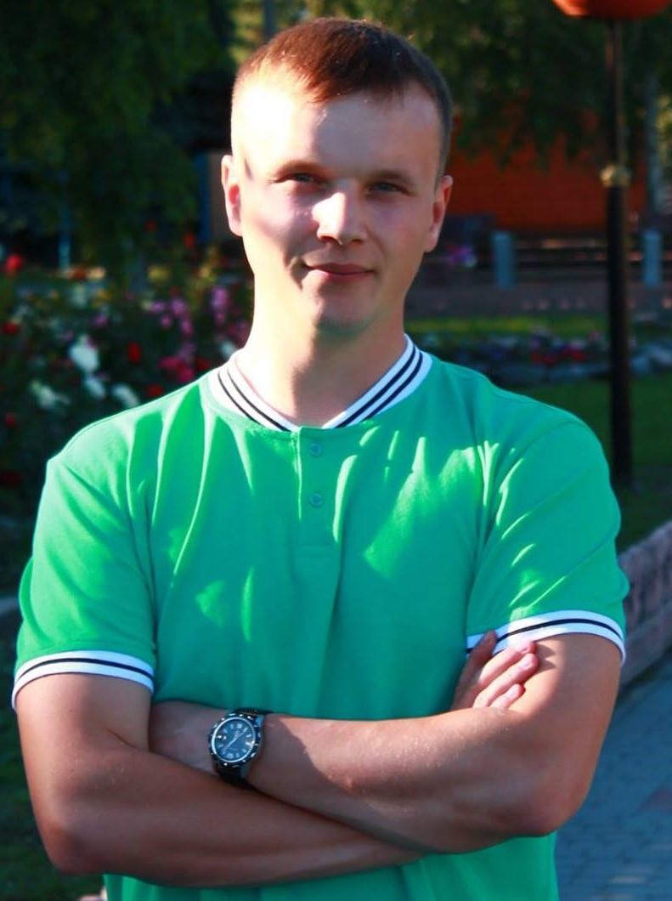

en
facebook
Home
Резюме

Юрій Кулик
Очікувана посада:Front-end розробник
Очікуваний рівень доходу: 600$
Дата народження: 29.05.1992
Адреса проживання: 38800, Полтавська обл.,
Полтавський р-н., смт. Чутове, вул. Лугова 3, кв. 2
Контактна інформація:
Телефон: +380669687877
Facebook: facebook
E-mail: elricua@gmail.com;
Професійні навички і знання:
- Вільне володіння ПК (Microsoft Office, робота в мережі Internet)
- Швидке та ефективне усунення різних технічних проблем ПК і мережі
- Робота з OS Windows XP, 7, 8, 10, графічними та мультимедійними редакторами
- Робота в СЕВ ОВВ та СЕДО «АСКОД»
Досягнення:
- Провів навчання персоналу по роботі в СЕДО «АСКОД», що дозволило перейти з паперового документообігу в
електронний
Освіта:
- Полтавський національний технічний університет імені Юрія Кондратюка, факультет менеджменту та
бізнесу, спеціальність – менеджмент інноваційної діяльності;
Досвід роботи:
Організація:Чутівська РДА
Посада:головний спеціаліст відділу фінансово-господарського забезпечення
- Обов'язки:
- Підтримка у належному стані функціонування парку комп`ютерної техніки, мережевого та
периферійного
обладнання, програмного забезпечення
- технічна підтримка функціонування поштових клієнтів відділів апарату райдержадміністрації
- контроль функціонування в належному стані системи електронного документообігу «АСКОД»
- програмно-технічний супровід відеоконференцій, відеонарад
Про себе:
- Якщо щось роблю, то роблю це добре. Люблю порядок, коли речі лежать на своїх місцях, уважно ставлюся до
деталей. Дружелюбний до оточуючих людей і відкритий до всього нового.
Позитивно дивлюся на життя. У вільний час граю в більярд та займаюся спортом
Знання мов:
- Українська – (рідна);
- російська – (вільно);
- німецька – (базовий),
- англійська – (базовий);